De manera sencilla podemos definir un dato, como una unidad mínima de información, hechos relacionados con cualquier tipo de objeto o sistema en consideración.
Mientras que, una base de datos propiamente, podemos verla como una colección sistematizada de estos datos.
Tipos de Bases de Datos
Existen varios tipos de Bases de Datos, algunas de ellas son:
Bases de datos navegacionales
En estas, los datos están organizados en estructuras de red o incluso de árbol
Bases de Datos jeráquicas
Llevan una estructura de árbol con relaciones padre-hijo
Bases de Datos Orientadas a Objetos
Los datos se encuentran representados como objetos
Bases de Datos Relacionales
Su aparición se remonta a la década de 1970. Su principal característica es que la organización de los datos se encuentra en tablas relacionadas.
Cada columna es un campo (El tipo de dato)
Cada fila es un registro
Clave Primaria. Es el identificador único de cada registro
Clave Foránea. Es una referencia a la clave primaria de otra tabla
La normalización es un proceso esencial en el diseño de bases de datos que busca eliminar redundancias y dependencias innecesarias. Su objetivo es organizar los datos en tablas que sean coherentes y eficientes.
Primera Forma Normal
Exige que cada columna contenga un valor único y atómico, evitando listas dentro de una misma celda.
Segunda Forma Normal
Asegura que los campo no clave dependan de toda la clave primaria, mo de una parte
Tercera Forma Normal
Establece que todos los atributos no clave dependan directamente de la clave primaria, eliminando dependencias transitivas
Ejercicios de diferentes consultas SQL dentro del SGBD de Microsft Access
Diagrama de la Base de Datos en Access
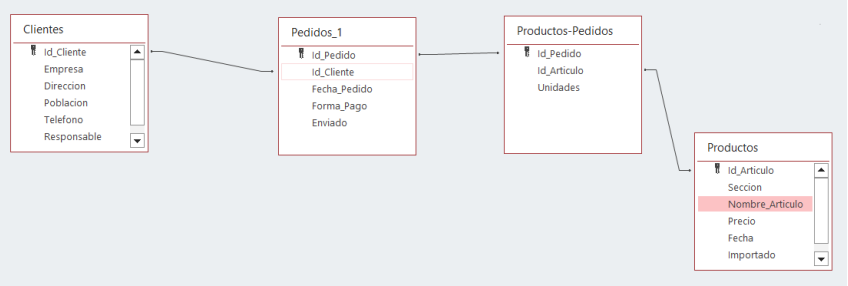
Ejercicio 1. SELECT con PK y FK
SELECT Clientes.Empresa, Pedidos.Id_Pedido,
Pedidos.Fecha_Pedido, Pedidos.Enviado
FROM Clientes, Pedidos
WHERE Clientes.Id_Cliente = Pedidos.Id_Cliente;
Ejercicio 2. SELECT con BETWEEN
SELECT Pedidos.Id_Pedido, Pedidos.Fecha_Pedido,
Pedidos.Forma_Pago
FROM Pedidos
WHERE Pedidos.Fecha_Pedido BETWEEN #06/01/2025# AND
#12/31/2025#;
Ejercicio 3. SELECT con LIKE
SELECT Clientes.Empresa, Clientes.Telefono, Clientes.Poblacion
FROM Clientes
WHERE Clientes.Poblacion LIKE "M*";
Ejercicio 4. SELECT con IN
SELECT Clientes.Empresa, Clientes.Telefono, Clientes.Poblacion,
Clientes.Direccion,
FROM Clientes
WHERE Clientes.Poblacion IN ("Mérida","Hecelchakán");
Ejercicio 5. SELECT con MAX
SELECT MAX(Precio) AS MayorPrecio
FROM Productos;
Ejercicio 6. SELECT con HAVING
SELECT Id_Cliente, COUNT(*) AS TOTAL
FROM Pedidos
GROUP BY Pedidos.Id_Cliente
HAVING COUNT(*) >1;
Ejercicio 7. INNER JOIN
El funcionamiento de una consulta de INNER JOIN, se basa en reflejaar siempre la información común que se encuentre en ambastablas que estén involucradas
SELECT * FROM Clientes INNER JOIN Pedidos ON
Clientes.Id_Cliente = Pedidos.Id_Cliente;
Ejercicio 8. LEFT JOIN
Por otro lado, las consultas con Left Join, no solo devolverá los registros que estén en ambas tablas, sino también TODOS los registros que se encuentren en la tabla de la izquierda.
SELECT Clientes.Empresa, Clientes.Id_Cliente,
Clientes.Poblacion, Clientes.Telefono
FROM Clientes Left JOIN Pedidos
ON Clientes.Id_Cliente = Pedidos.Id_Cliente;
Ejercicio 9. RIGHT JOIN
A diferencia del left Join, esta consulta realiza lo contrario. Pedidos mostrará también los registros que pudieron tener las dos tablas, sin mostrarnos algún registro de la tabla de clientes.
SELECT Clientes.Empresa, Clientes.Id_Cliente,
Clientes.Poblacion, Clientes.Telefono
FROM Clientes Right JOIN Pedidos
ON Clientes.Id_Cliente = Pedidos.Id_Cliente;
Ejercicio 10. UNION
SELECT Empresa, Poblacion
FROM Clientes
WHERE Poblacion = "Mérida"
UNION
SELECT Empresa, Poblacion
FROM Clientes
WHERE Poblacion = "Hecelchakán";
Ejercicio 11. Subconsulta
SELECT Clientes.Empresa
FROM Clientes
WHERE Clientes.Id_Cliente IN (
SELECT Id_Cliente
FROM Pedidos
WHERE Pedidos.Forma_Pago = "Transferencia"
);
Los "Trigger" no son más que un objeto almacenado en una base de datos que se ejecuta automáticamente cuando ocurre un evento específico en una tabla o vista.
Base de Datos en SQL Server
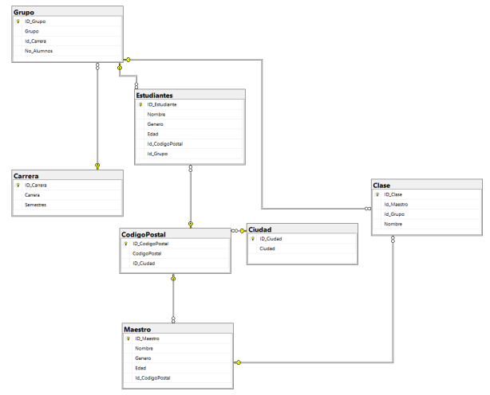
Trigger en INSERT
CREATE TABLE Historial(
fecha date,
descripcion VARCHAR(100),
usuario VARCHAR(50)
);
create trigger TR_EjInsert
ON Estudiantes for insert
AS INSERT INTO Historial VALUES(getdate(), 'Inserción de nuevo estudiante',
system_user);
GO
Query de Prueba:
INSERT INTO Estudiantes VALUES('Carlos', 'M', 23, 2, 1);
Resultado
En Estudiantes
En Historial
SELECT * FROM Estudiantes;
SELECT * FROM Historial;
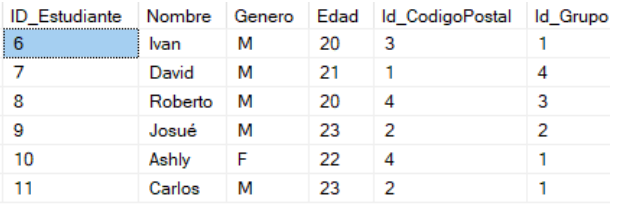
Trigger en DELETE
CREATE TABLE MaestrosEliminados(
ID_eliminacion INT IDENTITY(1,1) PRIMARY KEY,
Fecha_Eliminacion DATE,
Id_Maestro INT,
Nombre VARCHAR(50),
EliminadoPor VARCHAR(50),
);
CREATE TRIGGER TR_EjDelete
ON Maestro
FOR DELETE
AS BEGIN
SET NOCOUNT ON;
INSERT INTO MaestrosEliminados (Fecha_Eliminacion, ID_Maestro, Nombre, Eliminado_Por)
SELECT getdate(), ID_Maestro, Nombre, system_user
FROM deleted
PRINT('Registro eliminado con éxito');
END;
Query de Prueba:
DELETE FROM Maestro WHERE ID_Maestro = 11;
Resultados
SELECT * FROM MaestrosEliminados;
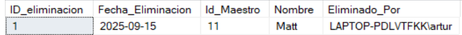
Trigger en UPDATE
CREATE TRIGGER Ej_Update
ON Estudiantes
FOR UPDATE
AS
BEGIN
IF UPDATE(Genero)
BEGIN
PRINT('Actualización de campo no permitida');
ROLLBACK TRANSACTION;
END
END;
Query de Prueba:
UPDATE Estudiantes
SET Genero = 'F'
WHERE ID_Estudiante = 11
El paraddigma de programación orientado a objetos, se caracteriza por estar basado en la encapsulación de los atributos y métodos.
Donde el código se organiza en unidades de las cuale, se crean objetos para su uso
¿Qué es un paradigma?
Sabemos que la Programación Orientada a Objetos es un paradigma, pero
¿A qué nos referimos con esto?
Básicamente, un "paradigama" es un patrón, un modelo. En programación,
se tratan más de estilos de desarrollo de software. con la importancia
destacable de que nos ayudan a abordar desarrollo y la clasificación
de los distintos lenguajes de programación
Conceptos clave de la Orientación a Objetos
Clases
Objetos
Se tratan de un modelo. Una unidad del esistema, que encapsula estados y comportamientos
Son la instancia de una clase. Representan un concepto.
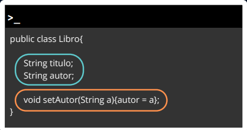
Pilares de la POO
Encapsulación
Se refiera a agrupar datos con métodos que puedan operar dentro de una clase.
Dichos métodos no son más que funciones para recuperar Getters y cambiarSetters información
Con la encapsulación se previene cualquier interacción directa de la clase con su exterior
Abstracción
La abstraccción consta de mostrar solamente los detalles esenciales de una entidad.
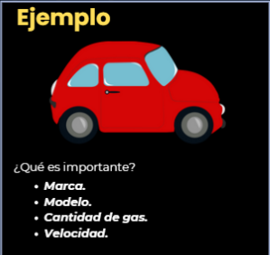
Interfaz
Es la manera en la que se las secciones de código se comunican. Se hace mediante métodos a los que cada clase puede acceder
Implementación
Implementación de los métodos de la interfaz
Herencia
Es el principio que le permite a las clases derivar de otras. El ejemplo más común es verlo como los ordenes de animales existentes:
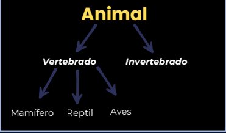
Podemos distinguir dos partes esenciales:
Superclase: Contiene los atributs y métodos comunes de todas las clases
Subclase: Heredan de la superclase (clases hijas)
Polimorfismo
Pilar que describe a los métodos que pueden tomar varias formas.
Podemos llamar a los dos formas de polimorfismo como:
Sobreescritura
Cuando los métodos tienen el mismo nombre pero con diferente implementación
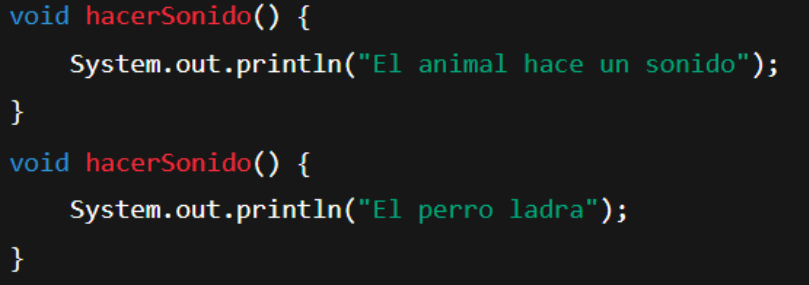
Sobrecarga
Cuando los múltiples métodos tienen el mismo nombre, aunque con diferentes argumentos
Este laboratorio presenta una integración entre Java With Maven y MySQL bajo el patrón de Modelo-Vista-Controlador (MVC)
Base de Datos en motor MySQl
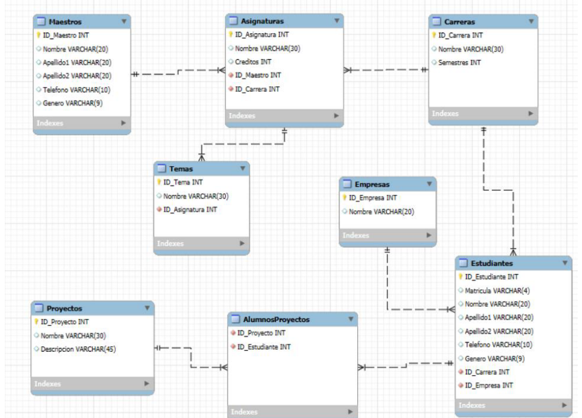
CRUD en Java with Maven
El CRUD, hace referencia al conjunto de métodos o acciones que se pueden realizar con los datos de una una fuente de datos.
Haciendo alusión a las iniciales en inglés:
Create
Read
Update
Delete
Que significa: Crear, Leer, Actualizar, Eliminar respectivamente
Para su implementación dentro de Java, se uso el principio de Interfaces:
Cadena de Conexión a MySQL desde Java
La cadena de conexión es un elemento importante al trabajar con Bases de Datos dentro de un Lenguaje de programación
Cada Gestor tiene su propia "conector" para cada lenguaje, en el caso de MySQL, debemos de declarar el conector dentro del archivo de configuración pom.xml.
Para después aplicar algo como:
Sentencia SQL con más de una tabla
En la práctica fue necesaria la implementación de una sentencia SQL que involucrara más de una tabla dentro del gestor:
Modelo-Vista-Controlador
El patrón MVC (Modelo-Vista-Controlador), se caracteriza por separar en módulos el proyecto:
Modelo. Podemos definirlos como las unidades más básicas en las que se tratan los datos, contienen atributos.
Vista. Se toma como la parte visual del programa. El modo en el que el usuario interactua con la aplicación.
Controlador. Los controladores son el puente entre las vistas con sus respectivos modelos, en ellos se encuentra la lógica de negocios (funcionalidades esperadas) para elementos como widgets en la vista.
Una arquitectura de Software se entiende como el proceso de análisis, diseño e implementación de estructuras de alto nivel en sistemas informáticos.
Determinan cómo los diferentes componentes del software interactúan entre sí, estableciendo las bases para un desarrollo escalable y mantenible
Las arquitecturas más conocidas son:
Modelo Cliente-Servidor
Modelo-Vista-Datos
Navegador-Web-Negocio-Datos
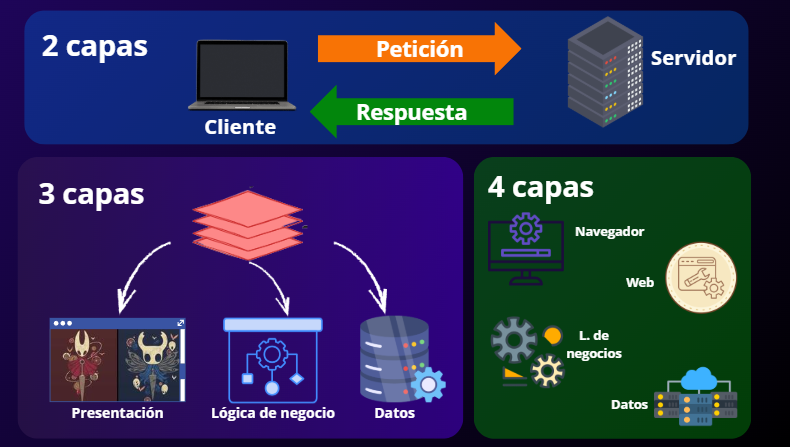
Frontend
En el desarrollo web, existen dos capas principales de elementos, la primera de ellas, es el llamado Frontend
El Frontend representa la capa de presentación de la aplicación, es decir, donde los usuarios interactúan con el sistema, mediante los elementos gráficos
Backend
Por otra parte, el Backend simboliza el motor del sistema. Es la lógica, datos e infraestructura que hacen que la aplicación funciones detrás de escena.
Todo el código desarrollado en Backend se ejecuta dentro de un servidor. Y tiene como funciones clave:
Lógica de negocio. Procesamiento de reglas empresariales, algoritmia y requerimientos del usuario.
Autenticación y Seguridad. Se verifican credenciales y realiza autorización y cifrado.
Gestión de Bases de Datos. Conexión a Bases de Datos relacionales y no SQL para persistencia de datos.
API
Una API del inglés Aplication Programming Interface se trata de un conjunto de definiciones y protocolos que se utiliza para permitir la comunicación entre 2 aplicaciones de software.
Son principlamente usadas para no tener que reinventar una solución ya existente, y pueden trabajar con información en los formatos JSON o XML. Dentro de ellas, se encuentran otras subcategorías que veremos:
Servicios Web
Todos los Servicios Web son APIs, pero no todas las APIs son Servicios Web.
Los serviciosweb son una definición de API las cuales operan para las acciones del protocolo HTTP.
Estas usan un lenguaje estandarizado de peticiones y respuestas
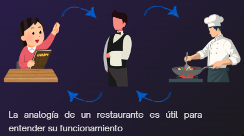
API REST
Relacionado a los Servicios Web, nos encontramos a las API REST.
Las cuales, no son más que un tipo de API que además de operar bajo HTTP, está basada en el uso de recursos.
Es decir, el modelo o modelos de una aplicación.
Estándar de Peticiones y Respuestas
Básicamente, el estándar aplica tanto para los Servicios Web y las API REST
Para la Petición se usa una combinación de Verbo HTTP + URL.
Donde el verbo HTTP se trata de la acción a Realizar GET,POST, PUT/PATCH, DELETE
Y la URL es la dirección web a la que envíamos la petición
Ahora ¿, para la Respuesta usamos la combinación de: Código de Estado + Cuerpo del Mensaje
El código de estado puede ser entre rangos:
200 >= Todo bien
400 >= Elemento no encontrado
500 - Error interno del servidor
El cuerpo del mensaje, que es meramente opcional para incluir